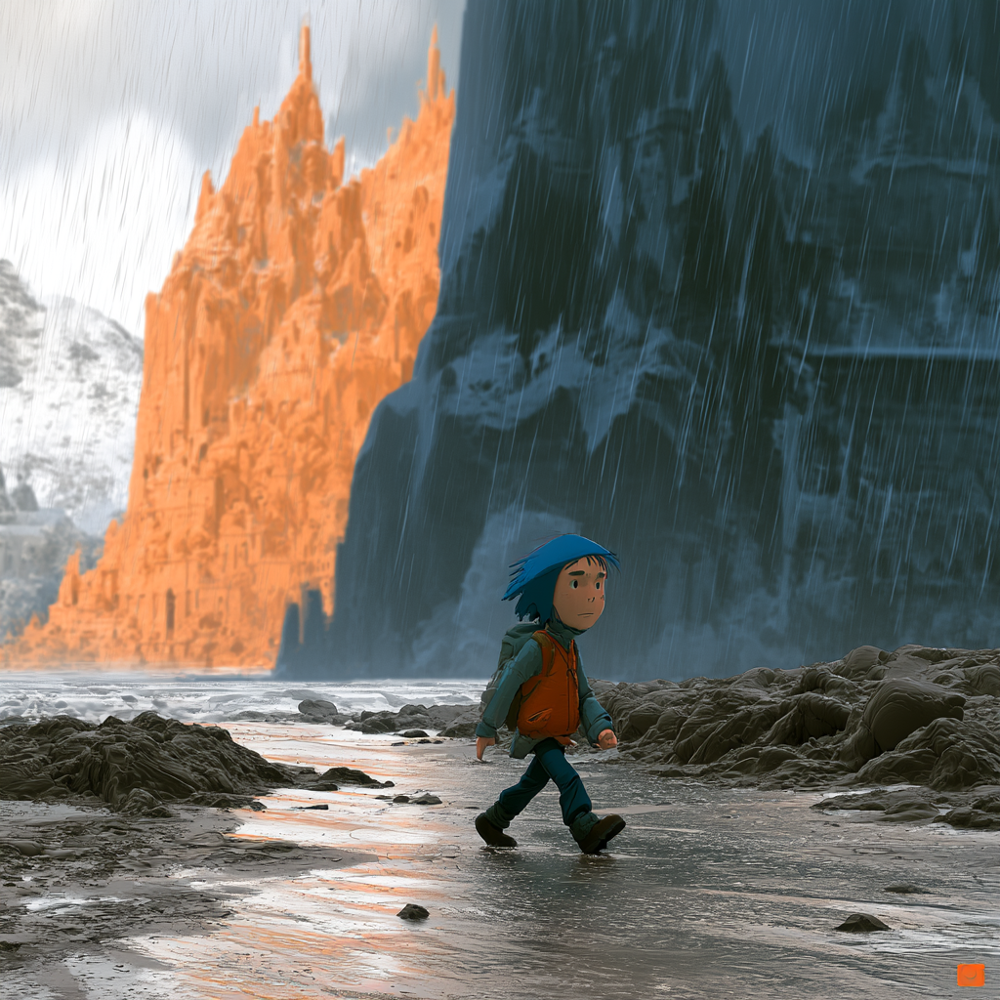

Wayfarer
You did not
pick the weather.
Half page · landscape
WayfarerPage 05
What to take
- 1A coat. It is going to rain.
- 2One thing that is actually yours.
- 3The name of one person you can call.
- 4Something to eat.
- 5A reason. It is allowed to be small.
Jacob left home with a stick. That is the entire packing list on record — his own words, Genesis 32:10.
Departure cardPage 05
Where you
are going
Fromwhere you were
Tonot printed
Leavesalready left
Arrives—
Seatyours
Almost nobody gets the whole route up front. You get the next bit of road and the weather you are in.